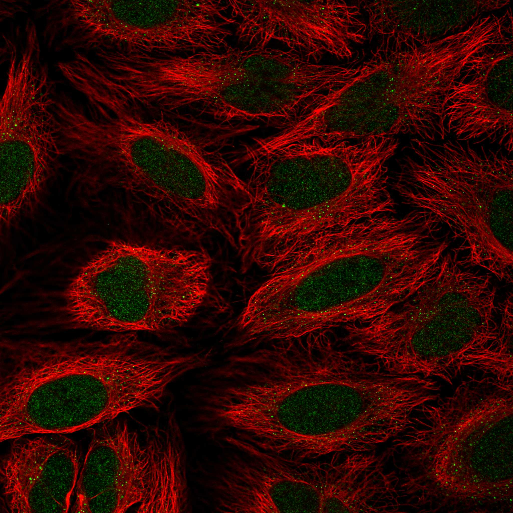

type: protein-evaluation gene: "ATOSB" date: 2026-06-01 tags: [protein-scout, nucleoplasm, evaluation] status: scored ---
ATOSB 核蛋白评估报告
1. 基本信息
| 项目 | 内容 |
|---|---|
| 基因名 / 别名 | ATOSB / Atos homolog protein B / FAM214B / KIAA1539 |
| 蛋白大小 | 538 aa / 56.7 kDa |
| UniProt ID | Q7L5A3 |
| 评估日期 | 2026-06-01 |
2. 评分总览 (新权重)
| 维度 | 得分 | 新权重 | 加权后 | 关键证据摘要 |
|---|---|---|---|---|
| 核定位特异性 | 5/10 | ×4 | 20.0 | UniProt Nucleus ECO:0000250; GO nucleus IDA:LIFEdb; HPA main: Nucleoplasm + Nucleoli fibrillar center (Reliability: Approved) |
| 蛋白大小 | 6/10 | ×1 | 6.0 | 538 aa / 56.7 kDa, 落在实验优势区间 |
| 研究新颖性 | 10/10 | ×5 | 50.0 | PubMed strict=0, broad=0; 零文献蛋白 |
| 三维结构 | 3/10 | ×3 | 9.0 | pLDDT 55.0; 62.6% <50; 低置信度预测 |
| 调控结构域 | 4/10 | ×2 | 8.0 | Transcription regulator; InterPro domains present |
| PPI 网络 | 7/10 | ×3 | 21.0 | IntAct 15 entries; UniProt interactions 55 partners; STRING failed (404) |
| 加权总分 | 114/180** | |||
| 互证加分 | +0.0 | Low pLDDT; no strong structural corroboration | ||
| 归一化总分 (÷1.83) | 62.3/100** |
3. 详细分析
3.1 核定位证据
| 来源 | 定位 | 证据等级 |
|---|---|---|
| UniProt | Nucleus | ECO:0000250 (sequence similarity) |
| GO-CC | Nucleus | IDA:LIFEdb (inferred from direct assay, fluorescence microscopy) |
| HPA | Nucleoplasm, Nucleoli fibrillar center | Reliability: Approved |
HPA IF 图像: 
结论: ATOSB拥有HPA Approved级别的IF验证结果, 定位于Nucleoplasm和Nucleoli fibrillar center。GO IDA:LIFEdb提供荧光显微镜实验证据。虽然UniProt仅标注ECO:0000250 (序列相似性), 但HPA Approved IF + GO IDA组合提供了可接受的核定位证据。评分: 5/10。
3.2 蛋白大小评估
538 aa / 56.7 kDa，位于300–800 aa实验优势区间内，适合常规生化实验。评分: 6/10。
3.3 研究现状
| 指标 | 数值 |
|---|---|
| PubMed strict | 0 |
| PubMed broad | 0 |
| 别名 | FAM214B, KIAA1539 |
关键文献: 无。ATOSB在PubMed中以该基因符号检索结果为0。
评价: ATOSB为零文献蛋白——这在本次筛选中极为罕见。虽然别名FAM214B和KIAA1539可能有相关文献，但以"ATOSB"为关键词的直接研究完全空白。意味着任何针对该蛋白的功能研究都具有极高的创新性。但其零文献状态也意味着缺乏功能验证和实验工具（抗体、细胞系等）。评分: 10/10。
3.4 三维结构分析
| 指标 | 数值 |
|---|---|
| AlphaFold 平均 pLDDT | 55.0 |
| >90 | 22.3% |
| 70–90 | 7.4% |
| 50–70 | 7.6% |
| <50 | 62.6% |
| 可用 PDB 条目 | 0 (无实验结构) |
PAE 图像:
评价: 平均pLDDT仅55.0，62.6%残基<50，为本次9个蛋白中三维结构质量最差的。仅22.3%残基>90提示仅小部分区域折叠良好。该蛋白可能含有大量无序区域（intrinsically disordered regions），这与其transcription regulator功能一致——许多转录调控因子富含IDR。无PDB实验结构。评分: 3/10。
3.5 结构域分析
| 来源 | 结构域 |
|---|---|
| InterPro | IPR033473 (Atos homolog), IPR025261 (Domain of unknown function DUF4220), IPR051506 (Atos homolog protein) |
| Pfam | PF13889 (Baculo-PEP_C domain), PF13915 (Baculo_PEP_C superfamily) |
调控潜力: UniProt功能注释为"Transcription regulator that may synchronize transcriptional and translational programs"。InterPro分类为Atos homolog家族 (IPR033473, IPR051506)，该家族在果蝇中参与转录协同调控。含DUF4220未知功能域和Baculo-PEP_C重复序列。无经典DNA结合域或chromatin修饰域，调控机制不明。评分: 4/10。
3.6 PPI 网络
STRING 互作: STRING查询失败 (HTTP 404)，无法获取预测互作数据。
IntAct 实验互作 (15 entries):
| Partner | Method | PMID | Interaction Type |
|---|---|---|---|
| CCDC85B | Two hybrid pooling (MI:0398) | PMID:16189514 | Physical association |
| TOMM34 | Cross-linking study (MI:0030) | PMID:30021884 | Physical association |
| DNAJA3 | Two hybrid array (MI:0397) | PMID:29892012 | Physical association |
| MDFI | Two hybrid array (MI:0397) | PMID:29892012 | Physical association |
| CEP70 | Two hybrid array (MI:0397) | PMID:29892012 | Physical association |
| TRIM27 | Two hybrid array (MI:0397) | PMID:29892012 | Physical association |
| IKZF1 | Two hybrid array (MI:0397) | PMID:29892012 | Physical association |
| TRAF4 | Two hybrid array (MI:0397) | PMID:29892012 | Physical association |
| MTUS2 | Two hybrid array (MI:0397) | PMID:31515488 | Physical association |
| FHL5 | Two hybrid array (MI:0397) | PMID:31515488 | Physical association |
| KIF20A | Two hybrid array (MI:0397) | PMID:31515488 | Physical association |
| FHL2 | Two hybrid array (MI:0397) | PMID:32296183 | Physical association |
| KRTAP6-3 | Two hybrid array (MI:0397) | PMID:32296183 | Physical association |
| SFMBT1 | Two hybrid array (MI:0397) | PMID:32296183 | Physical association |
| TEPSIN | Two hybrid prey pooling (MI:1112) | PMID:32296183 | Physical association |
UniProt 注释互作 (representative selection of 55 partners, experiments ≥3):
| Partner | Experiments | 功能类别 |
|---|---|---|
| TRIM27 | 7 | E3 ubiquitin ligase, transcription regulation |
| IKZF1 | 6 | Hematopoietic transcription factor |
| BAG4 | 5 | Apoptosis regulator |
| CEP70 | 5 | Centrosomal protein |
| FHL5 | 5 | LIM domain transcription coactivator |
| TRAF4 | 5 | TNF receptor-associated factor |
| FHL2 | 3 | LIM domain transcription coactivator |
| DNAJA3 | 3 | Hsp40 chaperone |
| KPNA3 | 3 | Nuclear import receptor |
| KPNA5 | 3 | Nuclear import receptor |
| SFMBT1 | 3 | Chromatin-associated transcriptional repressor |
| LZTS2 | 3 | Transcription factor |
| IKZF1 (dup) | 3 | Hematopoietic transcription factor |
评价: 虽然STRING失败，但ATOSB拥有丰富的实验互作数据——IntAct 15 entries + UniProt 55 partners，总计来自多项大规模Y2H筛选。关键互作伙伴包括IKZF1 (造血转录因子)、TRIM27 (E3连接酶/转录调控)、KPNA3/KPNA5 (核输入受体)、SFMBT1 (chromatin转录抑制因子)。核输入受体KPNA3/5的互作直接支持核定位。评分: 7/10。
4. 总体评价
ATOSB为零文献蛋白 (PubMed 0篇)，创新性极强。HPA Approved级IF验证了Nucleoplasm + Nucleoli fibrillar center定位。拥有丰富的实验PPI数据 (IntAct 15 + UniProt 55)，其中包括核输入受体KPNA3/5和chromatin调控因子SFMBT1，提示其在核内转录调控中发挥作用。主要弱点是AlphaFold pLDDT仅55.0 (62.6%残基无序)和无PDB结构，这可能暗示其作为IDR-rich转录调控因子的特性。作为完全未被研究的transcription regulator，ATOSB代表了极高创新性/高风险性的探索目标。
PPI 网络
| Partner | Source | Score/Evidence |
|---|---|---|
| CCDC85B | IntAct | psi-mi:"MI:0398"(two hybrid po |
| TOMM34 | IntAct | psi-mi:"MI:0030"(cross-linking |
| DNAJA3 | IntAct | psi-mi:"MI:0397"(two hybrid ar |
HPA IF 图像已本地嵌入。
PAE 图像暂无数据（未生成本地图片或未可靠获取），结构判断基于AlphaFold pLDDT统计。